Embedded Tab
The eyes live inside a tab panel so they feel part of the app instead of floating above it.
Community Plugin
Living eyes embedded inside your workspace.
They follow, blink, react, daydream, panic, focus, and keep each skin's iris color stable while emotions shape the lids, pupils, motion, and eye whites.
GooglyEyes opens a dedicated embedded tab with reactive eyes that follow your mouse, blink smoothly, and respond to local UI events.
The eyes live inside a tab panel so they feel part of the app instead of floating above it.
Dozens of moods use different lids, pupil sizes, gaze offsets, motion, eye-white tints, glow, timing, and per-skin tuning.
Switch between robots, monsters, masks, fantasy styles, horror looks, and playful characters.
Change skins, preview emotions, pause reactions, reset the view, or go fullscreen from compact controls.
Choose calm, curious, dramatic, goofy, suspicious, sleepy, chaotic, shy, focused, or mischievous behavior.
Use skin defaults or tune iris color, pupil color, iris size, pupil size, eyelids, glow, smoothing, and intensity.
Calm down animation, ambient emotions, motion effects, and micro pupil movement for a gentler workspace.
A small sample of the included tab-filling masks. Each skin keeps the iris and pupil separate, so the eyes can keep tracking naturally.
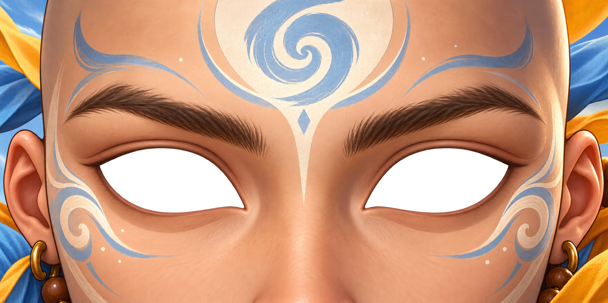
Air Monk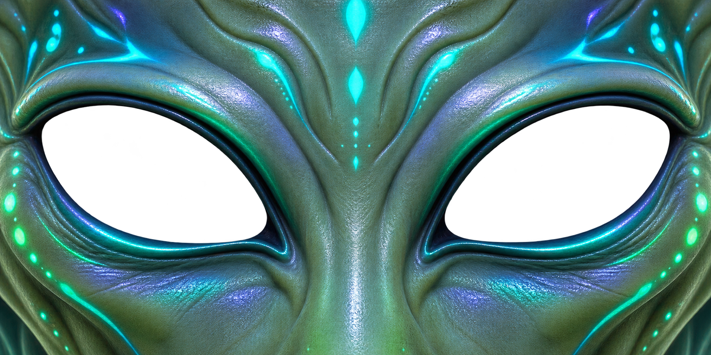
Alien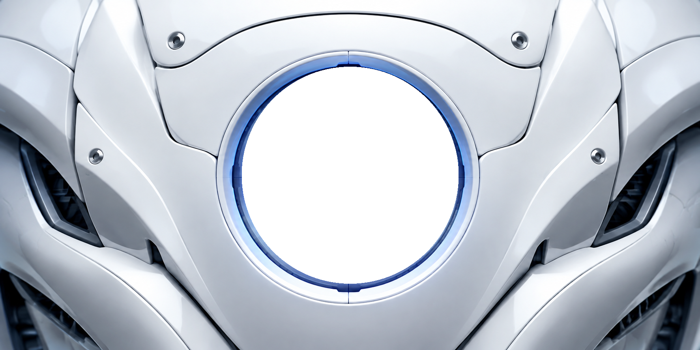
Atlas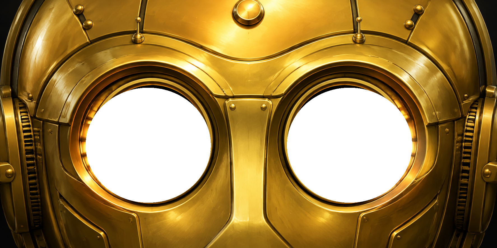
C-4PO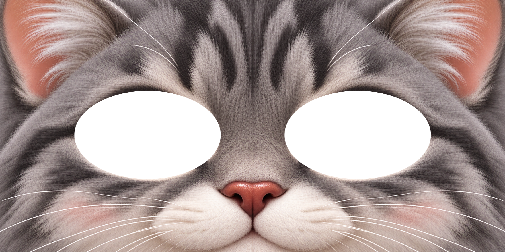
Cat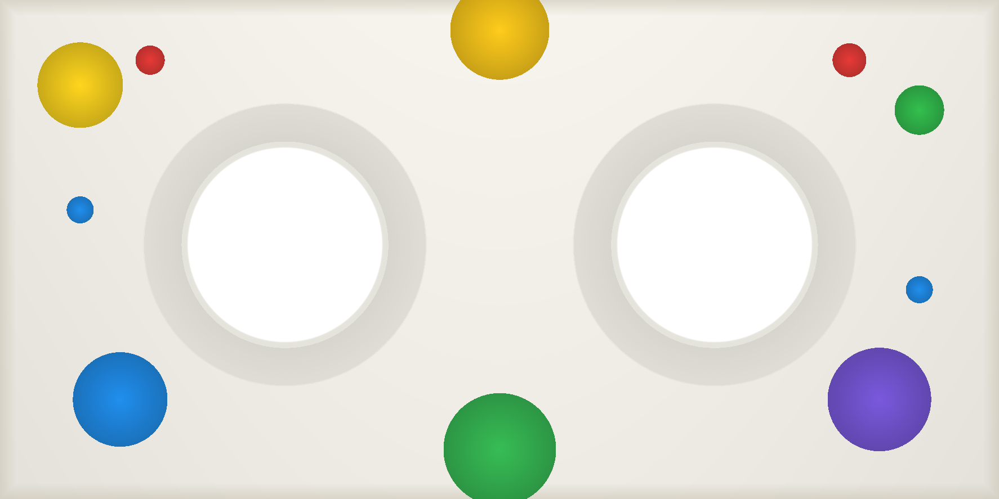
Classic Googly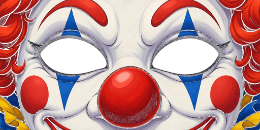
Clown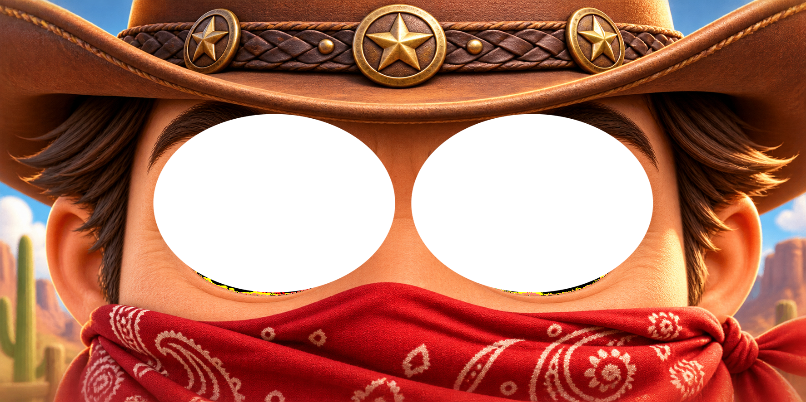
Cowboy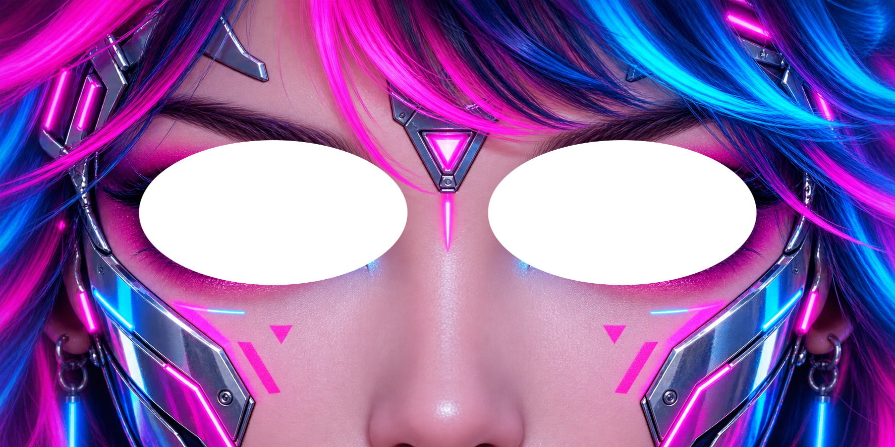
Cyberpunk Female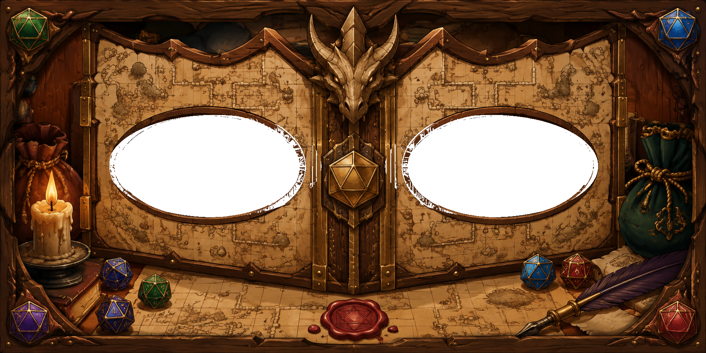
D20 DND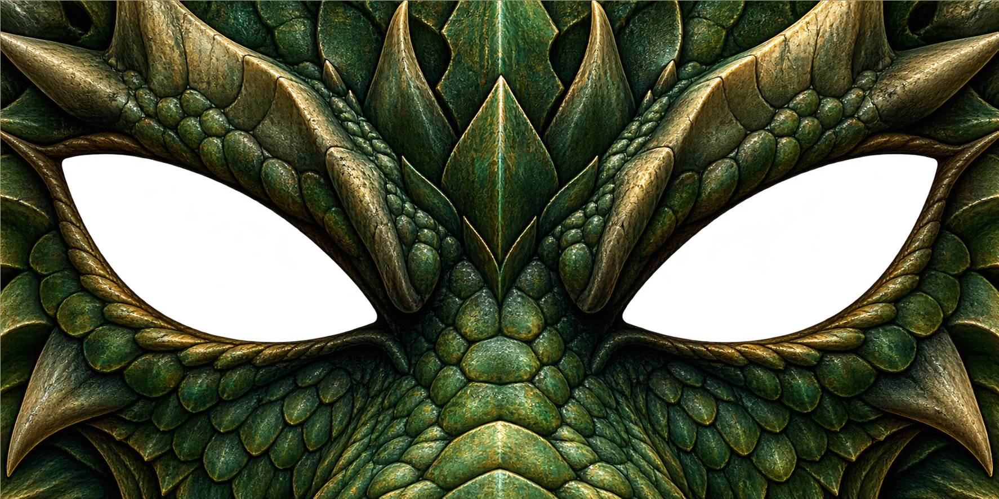
Dragon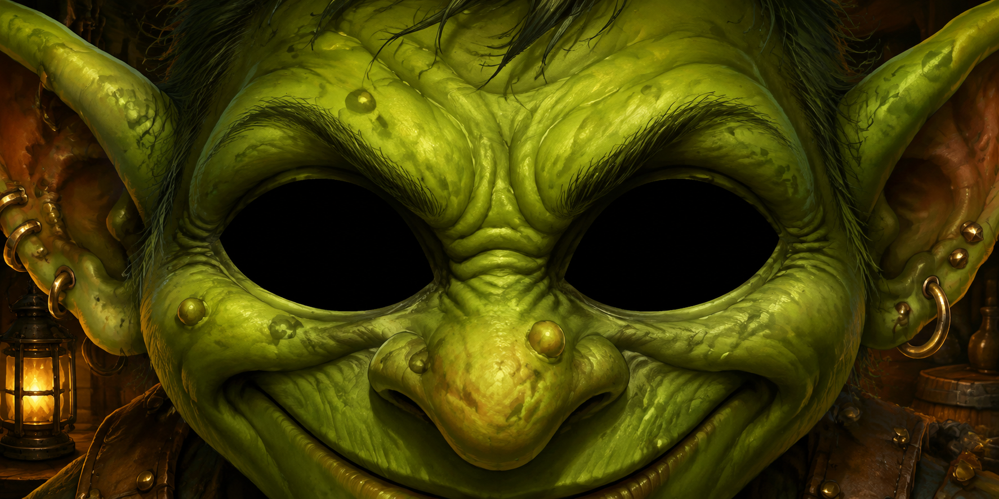
Goblin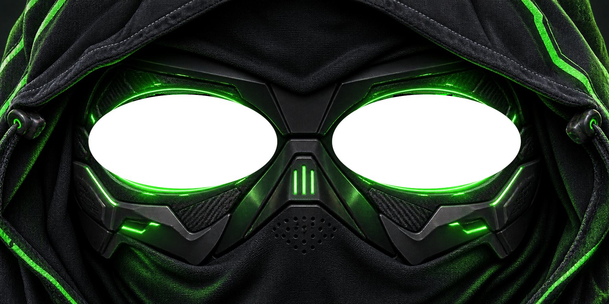
Hacker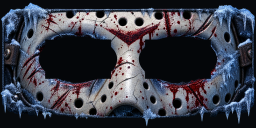
Jason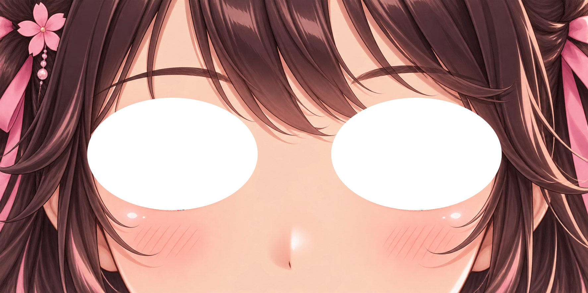
Manga Female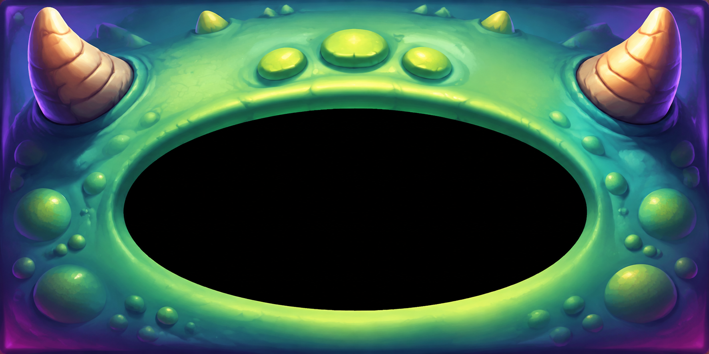
One Eye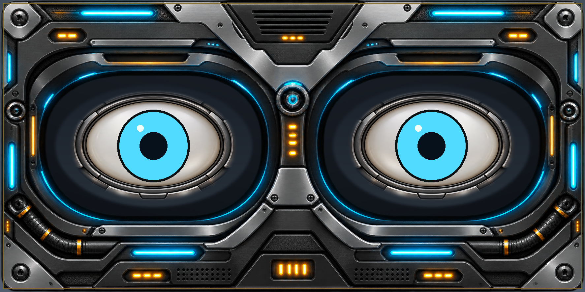
Robot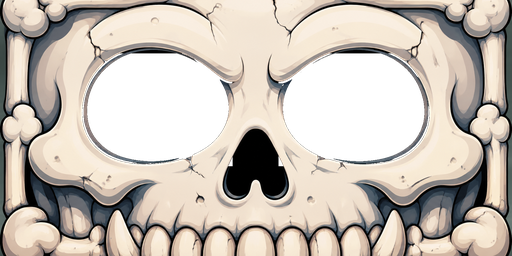
Skeleton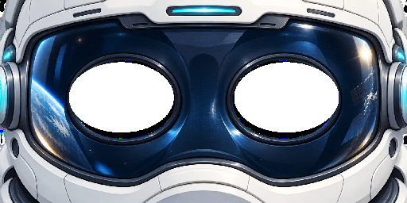
SpaceHelmet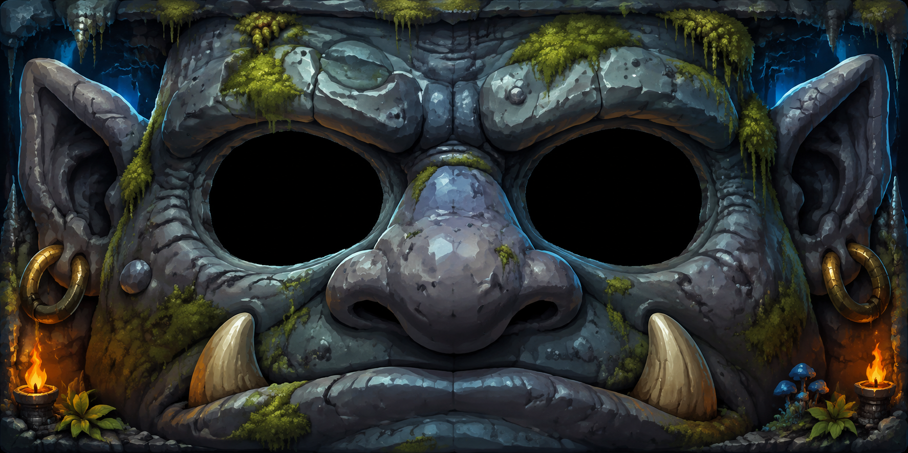
Troll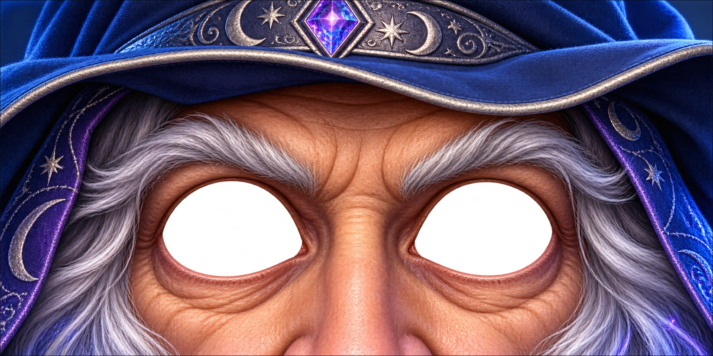
WizardUse the latest GitHub release, then enable GooglyEyes from the Community plugins screen.
main.js, manifest.json, and styles.css from the latest release..obsidian/plugins/googly-eyes/ inside your vault.assets folder in that directory.Open tab.GooglyEyes is local-only. It has no account, backend, analytics, telemetry, third-party tracking, runtime AI, or internet requirement. It does not read note text or clipboard contents; it only reacts to local UI events such as mouse movement, typing, and copy or paste events.